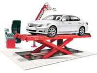
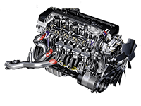
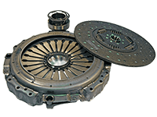
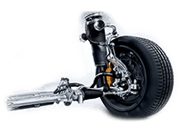

Услуги по ремонту автомобилей
Второе и последующие посещения со скидкой до 20%
Техобслуживание и ремонт на СТО автомобилей.
Предлагаемые СТО автомобилей услуги по ремонту автомобиля начинаются с
диагностики всех важных систем: трансмиссии, подвески (рулевые тяги,
наконечники, рейка, шаровые опоры, шрусы) и тормозной системы. При
обнаружении неисправностей автослесарь СТО составит перечень работ, их
последовательность и стоимость.

Техническое обслуживание
- Замена масла в двигателе автомобиля
- Замена тормозной жидкости
- Замена фильтров
- Замена масла в АКПП
- Замена охлаждающей жидкости
- Замена приводных ремней
- Обслуживание инжекторов
- Замена масла в МКПП
- Замена тормозных колодок
- Замена ремня ГРМ

Ремонт двигателей
- Ремонт системы охлаждения
- Ремонт цилиндро - поршневой группы
- Расточка блока цилиндров двигателя
- Ремонт топливной системы
- Ремонт кривошипно - шатунного механизма
- Хонингование блока цилиндров
- Ремонт ГБЦ (головки блока цилиндров)
- Расточка коленчатого вала

Ремонт трансмиcсии
- Ремонт заднего моста
- Диагностика и ремонт МКПП, КПП
- Ремонт коробки вариатор
- Ремонт раздаточной коробки
- Замена трансмиссионого масла
- Замена сцепления
- Замена и ремонт приводов
- Ремонт кулисы

Ремонт подвески
- Ремонт тормозной системы
- Ремонт рулевого управления
- Ремонт рулевой рейки
- Диагностика и ремонт ABS
- Ремонт пневмоподвески
- Замена амортизаторов
- Ремонт гидроусилителя
- осмотр автомобиля мастером,
- определение перечня работ,
-
определение необходимых запчастей для устранения неисправности
- составление заказ - наряда.